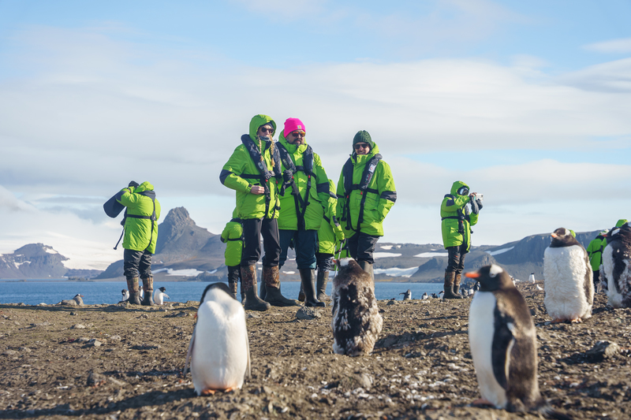
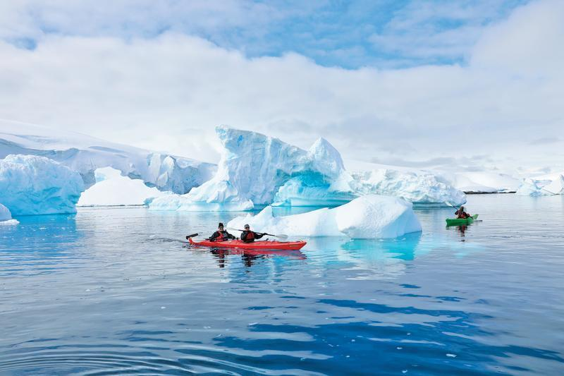
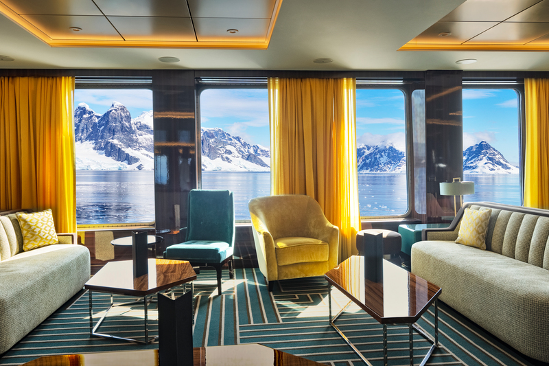
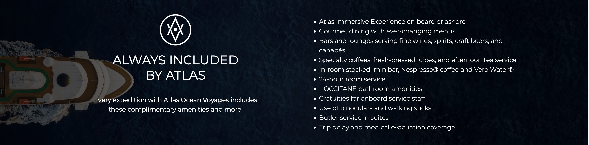
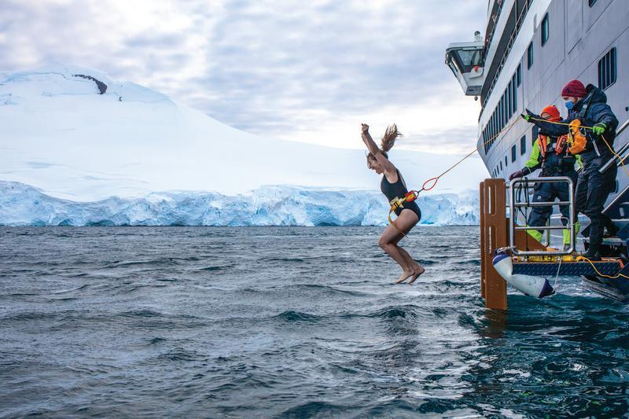
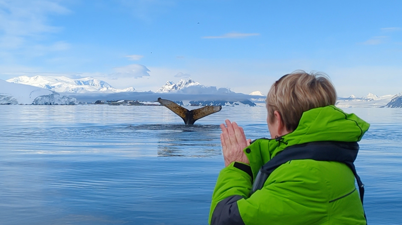
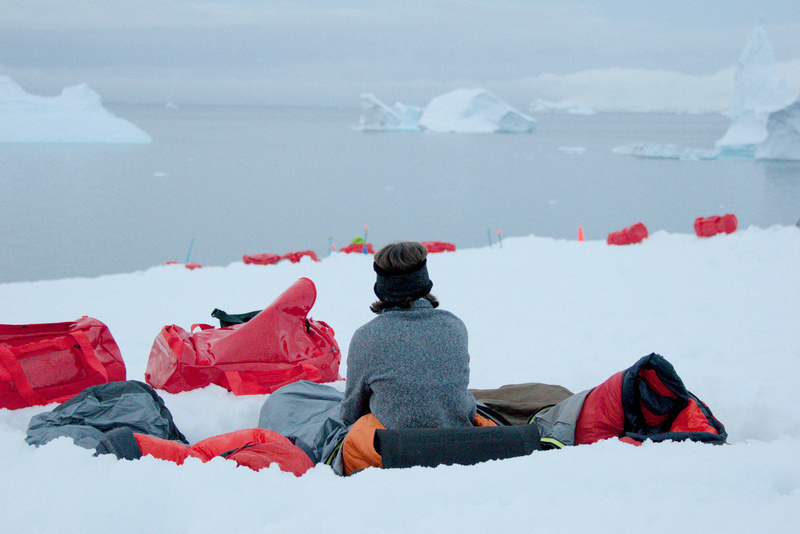

If you've ever considered going to Antarctica, this special group rate we've secured is the best deal you'll see to do so in style, offering an ultra-luxury expedition at budget pricing with the best Antarctica itinerary available. We're booked to sail on January 15, 2028. Join us!
Is this sailing too long, too expensive, or too soon for you? We've secured amazing group discounts on the ultra-luxury Scenic Eclipse II in December 2026 (exploring Antarctica and the remote Weddell Sea) and both January and February 2028 (going to the Falklands, South Georgia, and Antarctica). Check it out! We'll also be offering a group discount on an extremely limited November 2027 sailing on Quark's Ultramarine to remote Snow Hill, where, if conditions cooperate, you may be able to walk among emperor penguins in one of the only colonies accessible to travelers. Stay tuned, or reach out for more information!
Check out Mei-Mei's report from our fabulous December 2024 trip or our photo album!
Reach Out with Questions or to Book!

Our rate starts at $23,062 per person. Meanwhile, the public, discounted rate for the same room starts at $25,223 per person. If we sell enough rooms, you'll also receive a $200 per person onboard credit.

(Note: Subject to change based on conditions or at the captain's discretion.)
Departure: January 3 – January 21, 2027 (roundtrip from Buenos Aires) on board Atlas's World Traveller
See the itinerary here.
Pricing is based on double occupancy. Some rooms can hold three passengers; the third sails at a discounted price of $13,209. Room availability and pricing are subject to change; pricing is not guaranteed until a deposited booking has been made.
To see room descriptions, check out the World Traveller!

| Room Type | Size (square feet) | Our Price (per person) | Public Price (per person) |
|---|---|---|---|
| Adventure Oceanview Stateroom | 183 | $23,062 | $25,223 |
| Veranda | 270 | $24,416-$24,686 (depending on location) | $26,648-$26,933 |
| Horizon | 270 | $25,228-$25,499 | $27,503-$27,788 |
| Veranda Deluxe | 300 | $26,221 | $28,548 |
| Horizon Deluxe | 300 | $26,221 | $28,548 |
| Journey Suite | 382 | $27,574 | $29,973 |
| Discovery Suite | 445 | $28,928 | $31,398 |
| Navigator Suite | 465 | $30,733 | $33,298 |




Rooms are priced based on double occupancy. If you wish to sail solo with a room to yourself, it will be with a 50% supplement for staterooms and 1-3-27 for suites. However, if you're willing to share, we're happy to help look for a roommate!
International travelers: Unfortunately, this offer is only available to U.S. residents. However, if you are a solo traveler from another country, we can try to match you with a solo traveler from the U.S. (see the above section).